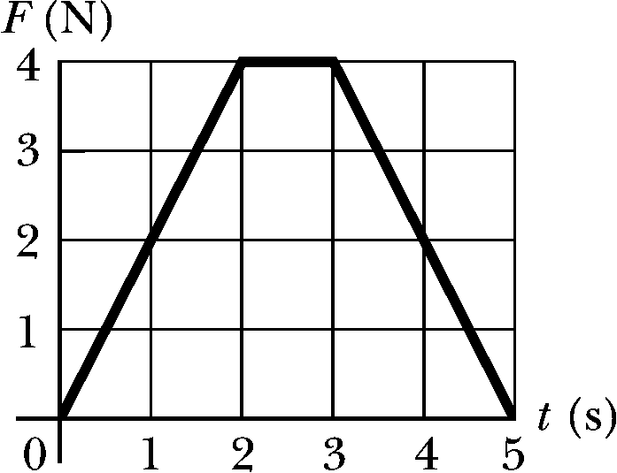
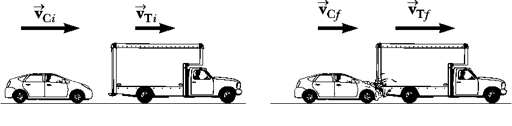
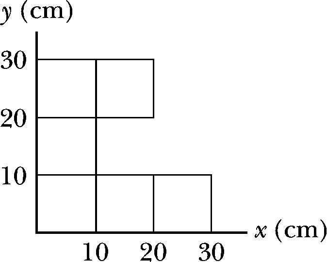
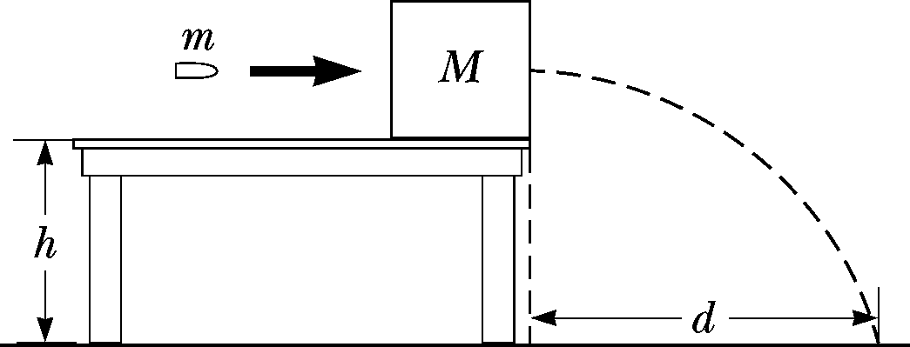

Homework 5 - Momentum
Problem 5.1
The magnitude of the net force exerted in the x direction on a \(2.50~kg\) particle varies in time as shown in the below figure. Find
- the impulse of the force over the \(5.00~s\) time interval
- the final velocity the particle attains if it is originally at rest
- its final velocity if its original velocity is \(-2.00 \hat{\mathbf{i}}~ m/s\)
- the average force exerted on the particle for the time interval between \(0\) and \(5.00~s\)

Problem 5.2
A \(1200~kg\) car traveling initially at \(v_{Ci} = 25.0~m/s\) in an easterly direction crashes into the back of a \(9000~kg\) truck moving in the same direction at \(v_{Ti} = 20.0~m/s\) (see below figure). The velocity of the car immediately after the collision is \(v_{Cf} = 18.0~m/s\) to the east.
- What is the velocity of the truck immediately after the collision?
- What is the change in mechanical energy of the car–truck system in the collision?
- What is the cause of this change in mechanical energy?

\vfill\eject\hspace{20mm}
Problem 5.3
Two blocks are free to slide along the frictionless, wooden track shown in the below figure. The block of mass \(m_1 = 5.00~kg\) is released from the position shown, at height \(h = 5.00~m\) above the flat part of the track. Protruding from its front end is the north pole of a strong magnet, which repels the north pole of an identical magnet embedded in the back end of the block of mass \(m_2 = 10.0~kg\), initially at rest. The two blocks never touch. Calculate the maximum height to which \(m_1\) rises after the elastic collision.

Problem 5.4
A billiard ball moving at \(5.00~m/s\) strikes a stationary ball of the same mass. After the collision, the first ball moves at \(4.33~m/s\) at an angle of \(30.0^\circ\) with respect to the original line of motion. Assuming an elastic collision (and ignoring friction and rotational motion), find the struck ball’s velocity after the collision.
\newpage
Problem 5.5
A uniform piece of sheet metal is shaped as shown in the below figure. Compute the x and y coordinates of the center of mass of the piece.

\vfill\eject\hspace{20mm}
Problem 5.6
A bullet of mass \(m=8.00~g\) is fired into a block of mass \(M=250~g\) initially at rest at the edge of a frictionless table of height \(h = 1.00~m\) (See below figure). The bullet remains in the block, and after impact the block lands a distance \(d=2.00~m\) from the bottom of the table. Determine the initial speed of the bullet.
